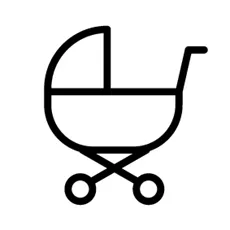
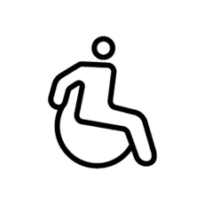
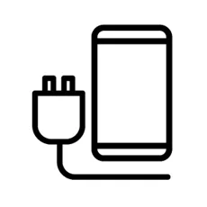
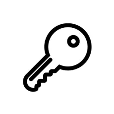
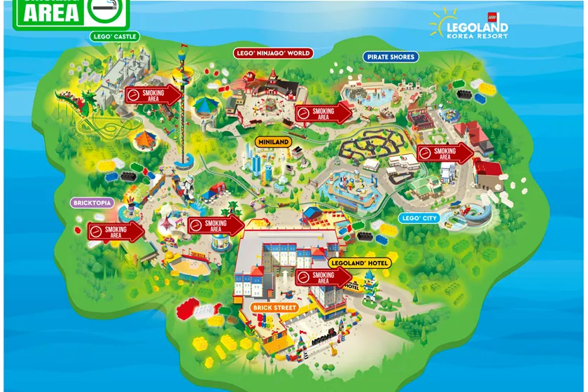

고객 서비스
파크에 대해 궁금하시다면 찾아주세요.
파크 안내와 함께 미아보호, 분실물 접수 및 수령, 히어로패스 발급을 도움드리고 있습니다.

유모차 대여
유모차는 파크 입구를 지나면 바로 위치하고 있는 유모차 대여소에서 유료로 대여 가능합니다. (수량 제한으로 선착순 대여)
대여료 : 6,000 원 보증금 : 10,000 원
*유모차는 24개월 미만 어린이만 이용하실 수 있습니다.

휠체어 대여
휠체어는 파크 입구를 지나면 바로 위치하고 있는 휠체어 대여소에서 유료로 대여 가능합니다. (수량 제한으로 선착순 대여)
대여료 : 4,000 원 보증금 : 10,000 원

* 스마트 벤치 (무선충전) 위치 :
①미니랜드 부산지역
②레고 시티마리나스낵 건너편
③해적의 바다
④레고 닌자고 게임장 옆
⑤ 레고 캐슬 왕실호위대 옆
⑥브릭토피아 전망대 앞
⑦브릭토피아 테이스티트릿 옆
* 보조배터리(보증금:1,000원) 대여소 위치 :
①브릭스트릿 포토샵 옆
②미니랜드 부산지역
③레고 시티마리나스낵 건너편
④레고 닌자고 게임장 옆
⑤브릭토피아 전망대 앞
휴대용 충전기 대여
휴대용 충전기는 파크 곳곳에 있는 LGU+ 휴대용 충전기 대여소에서 무료로 대여 가능합니다. (보증금:1,000원)
* 스마트 벤치 (무선충전) 위치 :
①미니랜드 부산지역
②레고 시티마리나스낵 건너편
③해적의 바다
④레고 닌자고 게임장 옆
⑤ 레고 캐슬 왕실호위대 옆
⑥브릭토피아 전망대 앞
⑦브릭토피아 테이스티트릿 옆
* 보조배터리(보증금:1,000원) 대여소 위치 :
①브릭스트릿 포토샵 옆
②미니랜드 부산지역
③레고 시티마리나스낵 건너편
④레고 닌자고 게임장 옆
⑤브릭토피아 전망대 앞

락커
하루 종일 짐을 보관할 수 있는 락커는 레고 캐슬 클러스터와 브릭스트릿 물품보관소가 운영 중에 있습니다.

의무실
갑자기 컨디션이 안 좋으신가요? 넘어져서 피가 난다구요? 시티 레스토랑 옆에 있는 응급처치실을 지금 바로 찾아주세요!
베이비 케어
- 기저귀를 갈 곳이 필요하신가요?
여성 전용 수유 공간이 필요하신가요?
LEGO® City와 Bricktopia에 위치한 Baby Care에 기저귀 교환대, 여성전용 수유실 및 유아 손님을 위한 서비스가 준비되어 있습니다.
* Baby Care 위치 : ① LEGO® City LEGOLAND® Express 옆 ② Bricktopia Build & Test 옆
* Baby Care 제공 서비스 : 기저귀 교환대, 여성전용 수유실, 유아 휴게실, 전자레인지, 냉온 정수기, 젖병소독기, 이유식 보관용 냉장고
여성 전용 수유 공간이 필요하신가요?
LEGO® City와 Bricktopia에 위치한 Baby Care에 기저귀 교환대, 여성전용 수유실 및 유아 손님을 위한 서비스가 준비되어 있습니다.
* Baby Care 위치 : ① LEGO® City LEGOLAND® Express 옆 ② Bricktopia Build & Test 옆
* Baby Care 제공 서비스 : 기저귀 교환대, 여성전용 수유실, 유아 휴게실, 전자레인지, 냉온 정수기, 젖병소독기, 이유식 보관용 냉장고

1. LEGO® CASTLE (나이츠 피스트 옆)
2. PIRATE SHORES (화장실 옆)
3. MARINA SNACK (화장실 옆)
4. BRICKTOPIA (화장실 옆)
5. BRICK STREET (브릭스트리트 카페 앞)
흡연 구역 안내
현재 파크 내 총 5개의 흡연 구역이 있습니다. 위치 확인을 부탁드립니다.
1. LEGO® CASTLE (나이츠 피스트 옆)
2. PIRATE SHORES (화장실 옆)
3. MARINA SNACK (화장실 옆)
4. BRICKTOPIA (화장실 옆)
5. BRICK STREET (브릭스트리트 카페 앞)
장애인 보호자 우대
장애인 손님이 안전 수칙을 준수하고 어트랙션 탑승을 도와주실 수 있는 만 16세 이상의 보호자 손님에게 ‘장애인 보호자 우대 이용권’을 무료로 제공해 드립니다.
장애인 보호자 우대 이용권은, 지정된 예약 페이지를 통해 사전 방문 예약을 하셔야 하며 장애인 손님 1명당 보호자 1명에게 제공 해드립니다.
장애인 보호자 우대 이용권은, 지정된 예약 페이지를 통해 사전 방문 예약을 하셔야 하며 장애인 손님 1명당 보호자 1명에게 제공 해드립니다.
이동에 어려움이 있는 분들
레고랜드 코리아 직원들은 손님을 어트랙션 입구까지 안내 해드릴 수 있습니다.
그러나 신체적 접촉은 조심스러운 부분이 있기 때문에 놀이기구의 승하차는 도움을 드리지 않고 있습니다.
함께하시는 보호자 분들의 도움을 받으시길 바랍니다.
그러나 신체적 접촉은 조심스러운 부분이 있기 때문에 놀이기구의 승하차는 도움을 드리지 않고 있습니다.
함께하시는 보호자 분들의 도움을 받으시길 바랍니다.
장애인 탑승 가능 놀이기구 정보
레고랜드 코리아 리조트에 있는 대부분의 놀이시설은 장애인을 포함한 모든 고객님들의 이용이 가능합니다.
자세한 이용관련 정보는 하단의 가이드 자료를 확인해주세요.
자세한 이용관련 정보는 하단의 가이드 자료를 확인해주세요.
장애인 탑승예약제 ‘히어로 패스’
오랜시간 줄 서기가 어려운 일부 장애인 손님들의 이용을 돕고자 무료 ‘온라인 탑승 예약제＇인 히어로 패스를 시행하고 있습니다.
히어로 패스를 이용하는 장애인 손님은 각 어트랙션의 이용 수칙에 따라 보호자 동행 또는 동승이 요청됩니다.
장애인 손님 외 최대 3명까지 (최소 한 명 이상의 만 16세 이상) 보호자로 히어로 손님과 함께 이용 가능합니다.
만 16세 이상의 보호자는 장애인 손님께서 각 어트랙션의 이용수칙에 따라 안전한 승하차를 도울 수 있는 분이어야 합니다.
히어로 패스 발급을 위해 실물 ‘장애인 복지카드＇소지 후 고객 서비스를 방문해주세요.
이용에 대한 자세한 안내는 아래에서 확인 가능합니다.
히어로 패스는 LEGOLAND® 코리아 리조트 모바일 앱을 통해 이용하는 서비스로, 방문 당일 보조 배터리를 지참하시기를 추천드립니다.
히어로 패스를 이용하는 장애인 손님은 각 어트랙션의 이용 수칙에 따라 보호자 동행 또는 동승이 요청됩니다.
장애인 손님 외 최대 3명까지 (최소 한 명 이상의 만 16세 이상) 보호자로 히어로 손님과 함께 이용 가능합니다.
만 16세 이상의 보호자는 장애인 손님께서 각 어트랙션의 이용수칙에 따라 안전한 승하차를 도울 수 있는 분이어야 합니다.
히어로 패스 발급을 위해 실물 ‘장애인 복지카드＇소지 후 고객 서비스를 방문해주세요.
이용에 대한 자세한 안내는 아래에서 확인 가능합니다.
히어로 패스는 LEGOLAND® 코리아 리조트 모바일 앱을 통해 이용하는 서비스로, 방문 당일 보조 배터리를 지참하시기를 추천드립니다.
교통 약자분들을 위한 대중교통 지원 서비스
도움이 필요하신 분을 위해 교통 약자 대중교통 지원 서비스를 아래와 같이 안내 해드립니다.
- 강원도 교통약자 광역지원 센터(gwd.go.kr)
- 봄내콜 교통약자 이용 지원 센터 (xn--220bm7utko.org)
- 강원도 교통약자 광역지원 센터(gwd.go.kr)
- 봄내콜 교통약자 이용 지원 센터 (xn--220bm7utko.org)
장애인 편의 제도 이용 문의 FAQ
A.
'패스트트랙'은 유료 상품으로 가상 줄서기가 가능한 시스템 입니다.
시스템 이용을 희망하시는 손님은 누구나 옵션으로 추가 구매 하실 수 있는 상품입니다.
'히어로 패스'는 오랜 시간 줄 서기가 어려우실 수 있는 일부 장애인 손님들의 이용을 돕는 무료 ‘온라인 탑승 예약제＇입니다.
'패스트트랙'과 '히어로 패스'을 이용한 탑승 예약은 대기 시간이 없는 것을 보장하지는 않습니다.
각 어트랙션의 대기 시간을 준수하며 이용객 대신 가상으로 대기해 드립니다.
A.
① 고객 서비스에 방문하여 본인 확인(장애인 복지카드 제시) 후 히어로 패스 발급 및 이용 안내를 받습니다.
② 장애인 복지카드 소시자 본인은 ‘패스트트랙 예약 사이트‘ QR 코드가 등록된 ‘히어로 패스 손목 밴드＇를 착용합니다.
③ 온라인 ‘패스트트랙 예약 사이트’를 통해 탑승을 희망하는 어트랙션을 예약 합니다.
(활성화 상태의 히어로 패스로만 예약 가능합니다. 패스 활성화는 고객 서비스에서 발급 시 도와드립니다.)
④ 예약 탑승 시간이 도달하면 어트랙션의 패스트트랙 대기 라인에서 기다려주세요.
직원에게 ‘히어로 패스 손목 밴드‘ 착용 인증 및 ‘히어로 패스 QR 코드’ 스캔 후 탑승 하실 수 있습니다.
(다른 히어로 패스 또는 패스트트랙 이용 대기자가 있을 경우 대기 시간이 발생 할 수 있습니다.)
⑤ 예약된 어트랙션 탑승 완료 후, 다른 어트랙션의 예약이 가능합니다.
(직전 탑승하신 어트랙션의 예약시 확인된 잔여 대기 시간이 모두 소진되어야만 다음 놀이기구를 예약 하실 수 있습니다)
A.
장애인 손님 외 만 16세 이상의 보호자를 포함, 최대 3명까지 등록 가능합니다.
보호자의 히어로 패스 단독 이용은 제한됩니다.
히어로 패스 이용자는 어트랙션 탑승 시 보호자와 함께 패스를 이용 할 수 있습니다.
주 보호자는 만16세 이상으로 LEGOLAND® 코리아 리조트의 이용 약관 및 안전 수칙을 준수하고 장애인의 이용에 책임과 도움을 제공 할 수 있어야 합니다.
장애인 보호자 우대 이용권 및 편의 제도 이용 문의 FAQ
A.
✔️ 사전 방문 예약을 완료하신 후, 방문일 당일 현장 매표소를 통해 1일 이용권을 정가로 구매하시는 장애인 손님 1명당 보호자 우대 이용권 1장이 제공됩니다.
✔️ 현장 매표소에서는 본인 확인(장애인 복지카드) 증빙 절차가 이루어지며,＇장애인 보호자 우대권은‘ 장애인 손님이 안전 수칙을 준수하고 어트랙션 탑승을 도움을 주실 수 있는 만 16세 이상의 손님에게 발급 됩니다.
✔️ 현장 매표소는 1일 이용권을 정가로 판매하고 있으며 별도의 추가 할인이 제공되지 않습니다.
당사 홈페이지를 통해 사전 구매하신 1일 이용권과 연간이용권 소지자 손님은 본 혜택 이용이 적용되지 않습니다.
A.
네, 본 혜택은 지정된 예약 페이지를 통해 ‘장애인 우대 예약권’을 사전에 예약하신 손님만 이용 가능합니다. 방문 예약 없이 현장 매표소에서 구매 시, 해당일의 파크 수용객에 따라 판매가 불가할 수 있습니다.
A.
본 혜택은 방문일 당일 현장 매표소에서 정가의 1일 이용권을 구매하시는 장애인 손님에게만 제공되는 혜택이기 때문에 무료입장권으로 입장 시에는 제공되지 않습니다.
A.
정가로 결제하지 않은 입장권에 대해서는 보호자 우대 이용권을 발급 받으실 수 없습니다.
A.
연간이용권 소지자는 보호자 우대 이용권이 발급되지 않기 때문에 장애인 손님이 연간이용권을 소지한 경우 보호자는 방문 시 1일 이용권 (오후 이용권 포함), 시즌패스, 혹은 연간이용권을 구매하셔야 합니다.
A.
방문일 당일 반드시 장애인 손님 본인과 함께 방문하셔야만 보호자 우대 이용권 발급이 가능합니다.
A.
실물 장애인 등록증 또는 실물 복지카드를 제시하셔야만 보호자 우대 이용권 발급이 가능합니다.
A.
LEGOLAND® 코리아 리조트는 파크 이용이 어려운 장애인 분들의 원활한 이용을 위하여 다양한 노력을 기울이고 있습니다.
♥ 휠체어 대여 : 휠체어는 빅샵 건너편 ‘유모차 대여소’에서 유료로 대여 가능합니다. 선착순으로 제공되며 수량 소진시 대여가 불가능할 수 있습니다.
♥ 가족 화장실 : 파크 내 총 6개의 클러스터의 화장실에 휠체어 이용이 가능한 가족 화장실이 마련되어 있습니다 (LEGO® 캐슬, LEGO® NINJAGO® 월드, 해적의 바다, LEGO® 시티, 브릭 스트릿).
♥ 의무실 : LEGO® 시티 내 시티 레스토랑 옆에 위치한 의무실에는 전문 자격을 갖춘 응급 처치사가 상주하고 있습니다.
♥ 고객 서비스 : 장애인 편의 가이드를 제공하며 히어로 패스 발급을 도와드립니다.
♥ 장애인 전용 주차구역 : 파크 유료주차장에 장애인 전용 구역이 준비되어 있습니다. 장애인 할인 혜택은 제공되지 않습니다.
♥ 안내견 (도우미 견) 동반 입장 : 파크 대부분의 장소에서는 시각장애인 안내견 및 청각장애인 도우미견의 입장을 환영합니다.